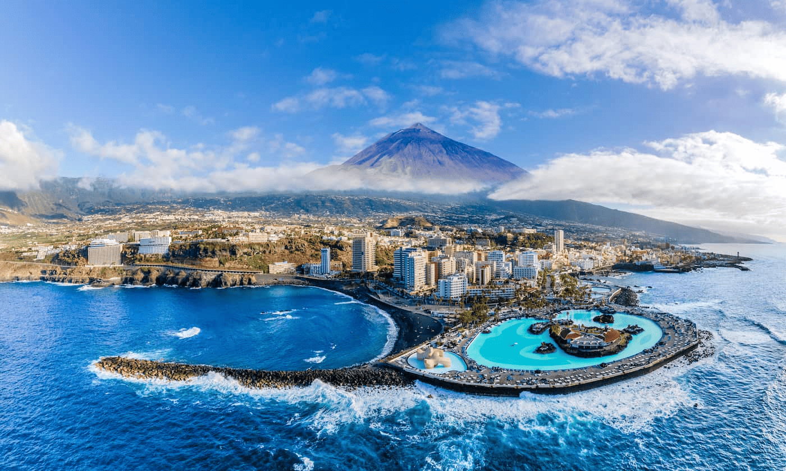
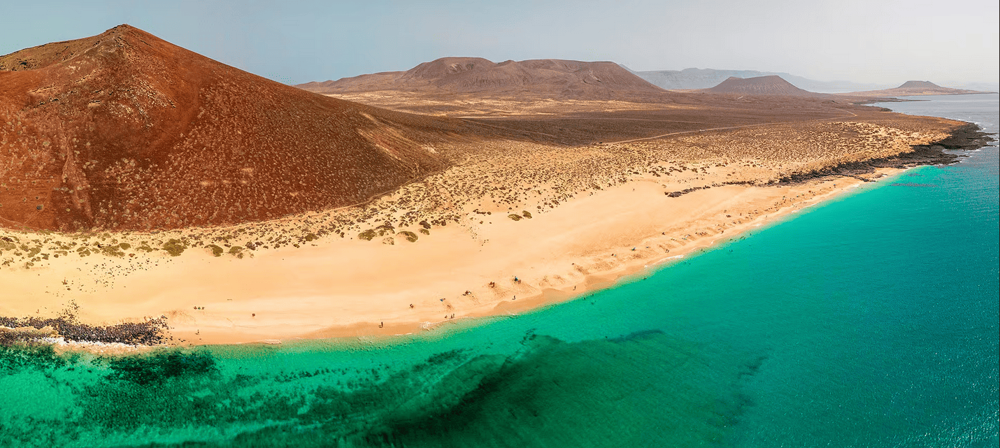

Una ciudad abierta que une dos continentes y en la que se mezclan cuatro culturas distintas: la cristiana, la musulmana, la hindú y la judía.
Hay que visitar las Murallas Reales y el Parque Marítimo del Mediterráneo. Y, si eres aficionado al deporte náutico, disfrutarás de la costa de Ceuta. Podrás navegar en kayak, visitar la ciudad en embarcación de recreo, pescar o avistar tortugas, delfines y ballenas. Aunque quienes más frecuentan su litoral son quienes practican el submarinismo, ya que en sus aguas confluyen el océano Atlántico y el mar Mediterráneo y eso propicia la regeneración constante de su flora y fauna.

La Graciosa (Isla)
La octava isla canaria es un pequeño paraíso de ensueño para quienes desean tranquilidad, silencio y disfrutar de una naturaleza virgen. Con playas de arena blanca y aguas turquesa, sin asfalto ni contaminación, es un tesoro para descubrir en el que viven poco más de 700 habitantes.
Al igual que el resto de las Canarias, La Graciosa cuenta con un clima agradable durante todo el año, por lo que cualquier época es buena para recorrer su paisaje volcánico y bañarse en sus playas. Sus 29 kilómetros cuadrados de territorio están protegidos en su totalidad, ya que son refugio para numerosas aves marinas y forman parte del Parque Natural del Archipiélago Chinijo, cuya reserva marina es la mayor de Europa. Al ser una isla pequeña y de relieve llano, es posible conocerla fácilmente practicando senderismo o en bicicleta a través de las cuatro rutas que la cruzan.

Tenerife (Isla)
La tranquilidad de pasear todos los días en manga corta sin notar frío. El placer de caminar con el mar siempre en el horizonte. La sensación de hundir la planta del pie en la arena. El frescor momentáneo de sentir el agua del Atlántico en un baño en la playa. La alegría de tener al sol como compañero de viaje.
A veces, solo pensarlo ya nos hace desconectar. Imagina vivirlo cada día de tus vacaciones y tener la sensación de cuidarte incluso sin intentarlo, de que el día a día te une más y más con el entorno, que vuelves a los orígenes y conectas con la naturaleza.
Lanzarote (Isla)
Una de las islas más fascinantes del archipiélago canario es, sin duda, Lanzarote. Nada más poner un pie en su territorio, llaman la atención los colores inconfundibles de sus paisajes volcánicos que contrastan con el azul del Atlántico.
Apenas hay árboles, pero la belleza de la vegetación que se abre paso sorprende. Los pueblos son de casas blancas de poca altura y el horizonte es infinito. Aquí la naturaleza convive con el arte.